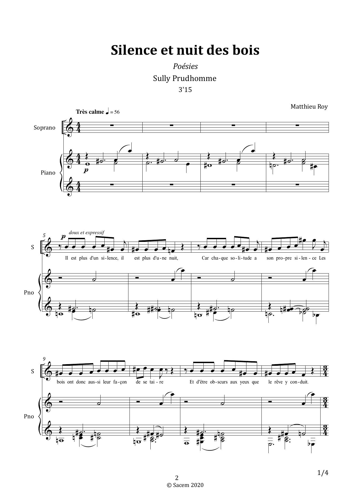

2020 · Composition
Solitudes
Cycle de cinq mélodies d’après Sully Prudhomme, composé pour la soprano Marie-Pierre Roy et publié sur le disque Le Long du Quai.


Partition : Matthieu Roy · © 2020
Le projet
Solitudes est une œuvre personnelle composée pour la soprano Marie-Pierre Roy, sœur de Matthieu Roy, et la pianiste Justine Eckhaut. Elle occupe une place particulière dans son parcours en mettant au premier plan son écriture pour la voix.
Le cycle figure sur le disque Le Long du Quai, consacré à des mélodies sur des poèmes de Sully Prudhomme et interprété par Marie-Pierre Roy et Justine Eckhaut.
Le Long du QuaiMarie-Pierre Roy · soprano · Justine Eckhaut · piano
Acheter le CD ↗